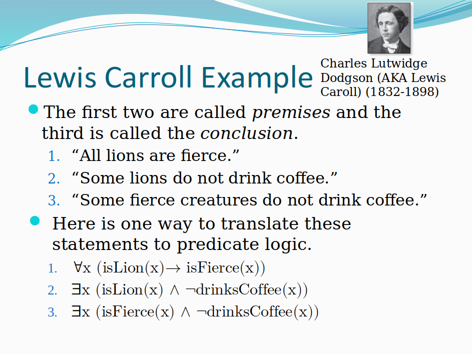

Library example_lions_coffee
Back to Discrete Assignments
This example is written by L.Carrol (the
author of "Alice in Wonderland". It is also
mentioned in K.Rosen's slide:
Predicate Logic: Lewis Carrol's Syllogism

In this example, there is a set CRE containing all creatures, isLion(x), isFierce(x) and drinksCoffee(x) are three predicates. The predicates and their interpretations do not matter for this example. In a similar way, you could write another syllogism (predicate-logic statement that is true by its construction): "All humans deserve respect. Some humans lie. Therefore some liars deserve respect."Human-readable proof
Since some lions do not drink coffee (i.e. there exists a non-drinking lion), let myLion be such a lion. Now let us establish that myLion is a creature that is both fierce and does not drink coffee.- Note that myLion should be fierce, since all lions are fierce.
- Furthermore myLion does not drink coffee because of how it was selected.
Computer-verified proof
Declare a set CRE of all the creatures,
including lions and non-lions, fierce and non-fierce,
drinking and non-drinking creatures.
Also declare three predicates (functions that map the set CRE into true/false propositions.
Also declare three predicates (functions that map the set CRE into true/false propositions.
These are two premises in the syllogism.
Hypothesis itemA: forall x:CRE, isLion(x) -> isFierce(x).
Hypothesis itemB: exists x:CRE, isLion(x) /\ ~drinksCoffee(x).
This is a conclusion from these premises
Lemma carrol: exists x:CRE, isFierce(x) /\ ~drinksCoffee(x).
Proof.
destruct itemB as [myLion H].
destruct H as [H1 H2].
exists myLion.
split.
apply itemA.
exact H1.
exact H2.
Qed.
End lions_coffee.
We can also write the same Lemma as a big implication,
where the premises itemA and itemB do not
appear as separate hypotheses, but are built into the
lemma itself. We need to declare
the set CRE and the 3 predicates once again, because
they are not visible after the section was closed.
Variable CRE: Set.
Variables isLion isFierce drinksCoffee: CRE -> Prop.
Lemma lion_lemma: (forall x:CRE, isLion(x) -> isFierce(x)) ->
(exists x:CRE, isLion(x) /\ ~drinksCoffee(x)) ->
(exists x:CRE, isFierce(x) /\ ~drinksCoffee(x)).
Proof.
Admitted.
In this example the keyword Admitted
indicates that we left this proof unfinished. If you
wish, you can edit this and create a proper proof
that closes by Qed.